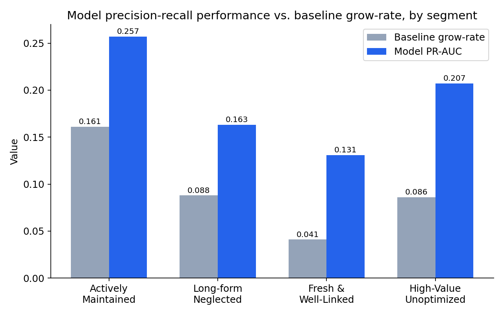
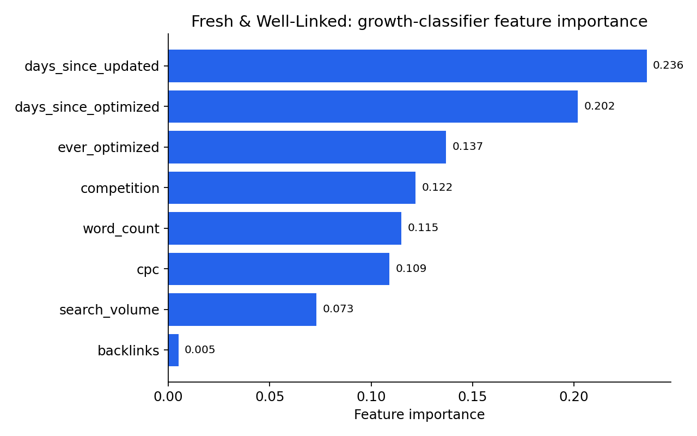

A FlyRank ML Internship Capstone — Search Intelligence, Ranking Signal Analysis lane
Which safe content and search signals are associated with click growth, and does that relationship differ across content types? This study joins content-level metadata (word count, competition, CPC, backlink presence, optimization history) with 90-day query-level performance from the FlyRank warehouse to test whether these signals predict short-term click movement. Content was first segmented into four data-driven clusters via k-means; linear regression on raw click deltas explained almost no variance (R² < 1.3% in every segment), but reframing the question as binary classification — did an item grow or not — revealed real, differentiated signal, most notably in a newer, well-linked segment where a class-balanced random forest achieved roughly a 3x lift in precision-recall performance over baseline. The result is a segment-aware, reason-coded priority list ranking which content is worth reviewing first, intended to guide review and optimization effort rather than to claim causal impact on rankings.
Content and SEO teams routinely decide what to update, optimize, or leave alone, usually without a systematic way to compare pages against each other on the signals that plausibly matter. This analysis supports that decision: given a large content inventory, which items are worth prioritizing for review, and on what basis? Rather than assuming one universal rule ("longer content is better," "optimize everything"), this study tests whether the signal-to-outcome relationship differs by content segment, and builds a transparent, reason-coded ranking that content teams can act on directly.
dim_content (content-level signals) and fact_content_query_90d (query-level performance over a fixed 90-day window, with last-30 vs. prev-30 sub-windows).is_published = true and is_deleted = false, joined only where impressions_prev30 > 0. Working dataset: 118,173 rows (from 120,156 pre-cleaning).feedly article content type did not appear in the final joined dataset and is excluded from this analysis. No client-identifying information is used or reported.backlinks untracked for 100% of feedly article and ~32% of keyword article; word_count/char_count missing for ~27% of keyword article rows. Handled with explicit missingness flags plus type-aware imputation, not silently dropped or filled blindly.Signals: search_volume, competition, cpc, word_count, backlinks, category_count, keyword length/token counts, and three freshness measures. Since 66.3% of content had never been optimized, a binary ever_optimized flag plus a sentinel-filled days_since_optimized (−1 = never) kept "never touched" cases distinct rather than silently imputed as recent.
click_delta = clicks_last30 − clicks_prev30, using the dataset's built-in last30/prev30 sub-windows within a fixed 90-day frame.
K-means (k = 3–8) on standardized signal features. Silhouette scores were weak-to-moderate throughout (0.21–0.25), peaking at k = 6 but with a singleton outlier cluster at that k. k = 4 was selected for robustness:
| Segment | n | Character |
|---|---|---|
| Actively Maintained | 37,100 | Recently optimized, moderate volume, moderate value |
| Long-form Neglected | 52,107 | Longest content, stale, never optimized |
| Fresh & Well-Linked | 25,628 | Newest content, most consistently optimized share, moderate value |
| High-Value Unoptimized | 3,338 | Highest search volume & CPC, rarely optimized, smallest segment |
Two approaches per segment: (1) OLS regression of click_delta on signals — tests magnitude prediction; (2) random forest classification of a binarized grew outcome (click_delta > 0), evaluated with ROC-AUC and PR-AUC given class imbalance (grow-rates 4.1%–16.1% across segments). Class weighting was required — an unweighted model achieved high accuracy purely by predicting the majority class, with 0.00 precision/recall on "grew."
The prev30 → last30 structure is itself a time-aware split: features are constructed from content-level and prior-window data, and the target reflects a strictly later window. Within each segment's classifier, a stratified 75/25 train/test split was used.
Regression results were uninformative on their own. R² ranged from 0.10% to 1.24% across segments — linear models could not explain meaningful variance in raw click-delta magnitude. This is reported directly: exact click movement is dominated by factors outside this signal set (seasonality, algorithm changes, competitive dynamics).
Classification revealed real, segment-specific signal:

Takeaway: In the Fresh & Well-Linked segment, the model's precision-recall performance (0.131) is roughly 3.2x its own baseline grow-rate (4.1%) — the largest gap of any segment, and the strongest signal-to-baseline ratio found.
| Segment | Baseline grow-rate | ROC-AUC | PR-AUC | Lift vs. baseline |
|---|---|---|---|---|
| Actively Maintained | 16.1% | 0.614 | 0.257 | ~1.6x |
| Long-form Neglected | 8.8% | 0.661 | 0.163 | ~1.9x |
| Fresh & Well-Linked | 4.1% | 0.723 | 0.131 | ~3.2x |
| High-Value Unoptimized | 8.6% | 0.700 | 0.207 | ~2.4x |

Takeaway: days_since_updated and days_since_optimized together account for ~44% of this model's predictive weight (0.236 + 0.202 of ~1.0 total), while backlinks contributes almost nothing (0.005) — freshness of upkeep, not link authority, drives this segment's growth predictability.
ever_optimized was negatively associated with click growth in three of four segments, and days_since_optimized was positively associated with growth. Taken literally, this would suggest optimization harms performance — almost certainly reverse causality: content tends to get optimized because it was already declining. The classifier is more mixed here: ever_optimized carried near-zero importance in two segments but meaningful weight (0.065–0.137) in the other two, so this confound is likely present but not uniform across segments — treated as an open question rather than resolved.
backlinks and word_count/char_count had systematic, type-concentrated missingness; imputation choices are disclosed above.Priority scoring combines commercial value (search_volume × cpc, percentile-ranked), predicted-growth deficit, and never-optimized status (weighted 50/30/20), computed per segment using each segment's own model.
ranked_action_list.csv.ever_optimized showed non-trivial importance.work/ in the accompanying repository.ranked_action_list.csv.FlyRank/internship-warehouse).